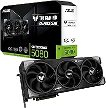

Serie RTX 5000
NVIDIA GeForce RTX 5080
La NVIDIA GeForce RTX 5080 es una tarjeta gráfica de gama alta de la serie RTX 5000, basada en la arquitectura Blackwell. Cuenta con 16 GB de memoria GDDR7 y ofrece un rendimiento excepcional en juegos a 1440p y 4K, incluso con configuraciones gráficas extremas. Gracias a tecnologías como DLSS 4, Multi Frame Generation y Ray Tracing de nueva generación, proporciona altas tasas de FPS, imágenes más fluidas y efectos visuales realistas. Es una excelente opción para gamers y creadores que buscan un rendimiento de nivel entusiasta.
- Arquitectura NVIDIA Blackwell
- CUDA Cores 10,752
- VRAM 16 GB GDDR7
- Bus de memoria 256-bit
- Ancho de banda 960 GB/s
- Base Clock 2.30 GHz
- Boost Clock 2.62 GHz
- Tensor Cores 5.ª generación — 1,801 AI TOPS
- RT Cores 4.ª generación — 171 TFLOPS
- DLSS DLSS 4 + Multi Frame Generation
- Ray Tracing Sí
- TGP 360 W
- Fuente recomendada 850 W
- Interfaz PCI Express 5.0
- DirectX DirectX 12 Ultimate
- NVENC 2× codificadores de 9.ª generación
- AV1 Encode y Decode
- Salidas 3× DisplayPort + 1× HDMI
- Resolución máxima 4K a 480 Hz / 8K a 165 Hz con DSC
$1,200.00
Realizar pedido